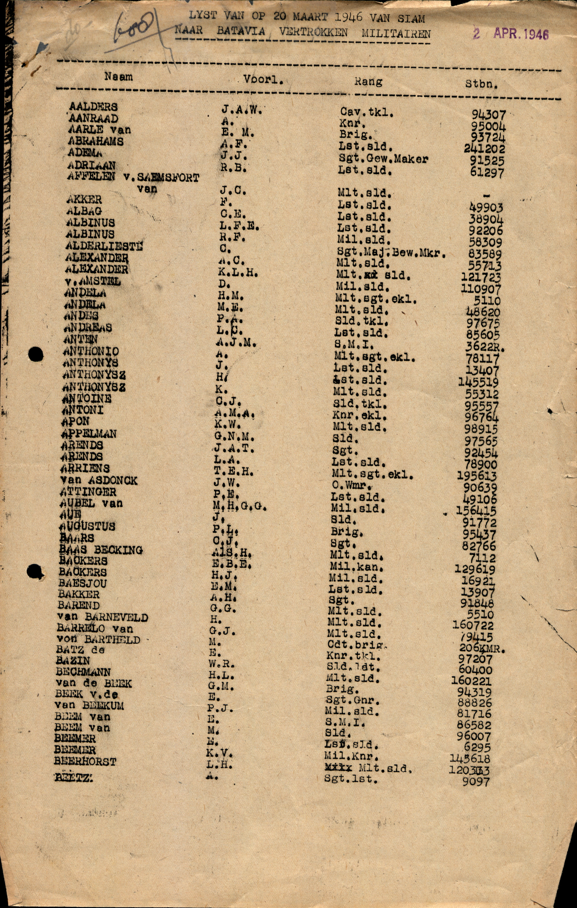
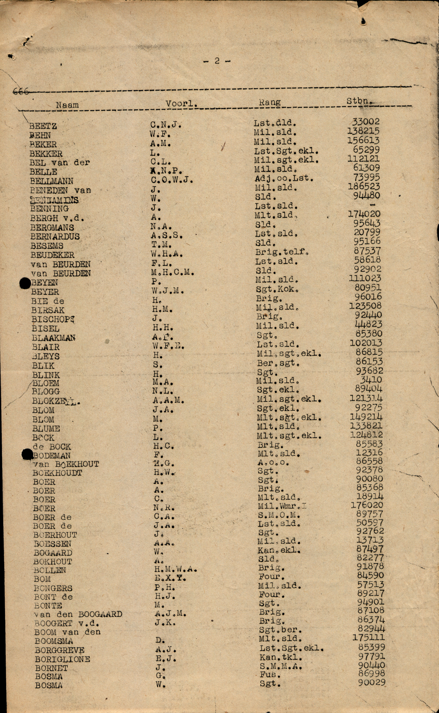

Japanse interneringskaart · IMG_7923.jpeg
Persoonsgegevens, eenheidsnotitie “Inf. XV Bandoeng” en registratie van krijgsgevangenneming.
← Terug naar Indisch Beeldarchief
Onderzoeksdossier — Hubert Manuel Birsak · peildatum 18 november 2026
De vier originele scans zijn nu aanwezig in de GitHub-repository. Klik op een afbeelding om de scan op volledige grootte te openen. Bestandsnamen zijn behouden zoals geüpload.
Persoonsgegevens, eenheidsnotitie “Inf. XV Bandoeng” en registratie van krijgsgevangenneming.

Dit is de paspoortkaart van Hubert Manuel Birsak, zoon van Ernanie Ernest Birsak. Een eerdere transcriptie las “Wilbert” en noemde 8 mei; de grafregistratie en Japanse kaart bevestigen Hubert en 9 mei 1908. De originele kaart moet nog opnieuw op hoge resolutie worden getranscribeerd.

Pagina 1 van de lijst van militairen die op 20 maart 1946 van Siam naar Batavia vertrokken.

Bevat de vermelding BIRSAK H.M., Mil.sld., stamboeknummer 123508.
Naam Birsak, Hubert Manuel; geboortedatum 1908-05-09; eenheidsnotitie “Inf. XV Bandoeng”; datum krijgsgevangenneming 8 maart 1942. Doorgehaalde nummers en sommige handgeschreven velden vragen nadere transcriptie.
Paspoortaanvraagkaart met twee portretfoto’s, registratie PM 21495 en paspoortnummer 904645. Een eerdere transcriptie/rapportage schreef de naam als “Wilbert Manuel”. Die lezing wordt niet als persoonsnaam overgenomen: de grafregistratie en de Japanse kaart bevestigen Hubert Manuel Birsak. Hertranscriptie van de originele kaart blijft nodig. De kaart vermeldt Ernanie Ernest als vader.
Lijst van militairen die op 20 maart 1946 van Siam naar Batavia vertrokken. Pagina 1 is context; Hubert staat op pagina 2.
Bevat de vermelding BIRSAK H.M., rang Mil.sld. (militair soldaat), stamboeknummer 123508.
Het 15e Bataljon Infanterie had zijn kampement in Bandoeng. Tjikoedapateuh werd tijdens de Japanse bezetting ingericht in de voormalige KNIL-kampementen van het 15e Bataljon, het 1e Depot Bataljon en de luchtdoelartillerie. De terreingrenzen worden in kampbronnen aangeduid als Kampementstraat, Noorder Kampementstraat, Van Oldenbarneveltweg en Noorder Magazijnstraat.
Volgens Ons Land functioneerde Tjikoedapateuh van maart 1942 tot 28 april 1945 als krijgsgevangenkamp, vanaf 15 januari 1945 tot 23 augustus 1945 als mannenkamp en van 23 augustus 1945 tot 1946 als opvangkamp. Dit zijn opeenvolgende/overlappende kampfuncties; de samenstelling van de bevolking veranderde.
De historische straatgrenzen zijn bekend uit kampbeschrijvingen, maar zijn nog niet gegeorefereerd aan een betrouwbare historische plattegrond en huidige kaartlaag. We tonen daarom geen ongecontroleerde exacte pin.
Open kaartzoekingang voor Kampementstraat, Bandung
De officiële zoekhulp van het Nationaal Archief maakt duidelijk dat er geen algemene naamindex is voor alle KNIL-stamboeken. Eerst moet worden vastgesteld of Hubert in Nederland of in Nederlands-Indië is aangenomen. Zijn geboorteplaats Buitenzorg bewijst op zichzelf niet waar hij in dienst trad.
Belangrijk: stamboeken vermelden doorgaans indiensttreding, rang, wapenonderdeel, overplaatsingen en krijgshandelingen. Ze vermelden niet de plaatsen waar de militair gelegerd was en bevatten geen portretfoto’s. Voor het aantonen van de feitelijke plaatsing in Bandoeng moeten daarom ook bataljons- en garnizoensdocumenten worden gezocht.
Bronnen: Nationaal Archief — KNIL onderofficieren en soldaten; Oost-Indisch Boek 1832–1936; SAIP 2.10.50.03.
Het Nationaal Archief meldt dat de persoonsdossiers van het Oorlogsarchief Nederlandse Rode Kruis momenteel worden gedigitaliseerd. Nieuwe aanvragen voor NRK-onderzoek zijn daarom niet mogelijk tot en met 15 februari 2027. Deze route staat op de vervolgagenda voor na die datum. Voor algemene vragen verwijst het Nationaal Archief naar info@nationaalarchief.nl.
Bron: Nationaal Archief — Oorlogsarchief Nederlandse Rode Kruis.
Een eerder familie-onderzoek in Notion bevatte al de transportlijst als scan NL-HaNA_2.13.108_13_0031. De officiële inventaris bevestigt dat inventarisnummer 13 gaat over demobilisatie van personeel en evacuatie uit Thailand, 1945–1946. Dit is dus de primaire archiefreeks waarin de aangeleverde Siam–Batavia-transportlijst thuishoort.
De officiële inventaris en een selectie uit het archief noemen deze stukken expliciet. Inventarisnummers 13 en 67 zijn als digitaal beschikbaar vermeld in de inventarisweergave; de onderliggende bestanden moeten nog op Hubert/123508 worden gecontroleerd. Bronnen: Nationaal Archief 2.13.108, PDF-inventaris, inventarisnummer 67 in Afscheid van Indië.
Belangrijke correctie in de onderzoeksprioriteit: omdat de aangeleverde transportlijst zelf is geïdentificeerd als scan NL-HaNA_2.13.108_13_0031, moet eerst de volledige inventaris 13 worden onderzocht. Dit kan meer directe informatie opleveren over Huberts repatriëring dan een brede, algemene zoekopdracht naar krijgsgevangenen.
De familie heeft bevestigd dat Ernanie Ernest Birsak (E.E. Birsak) de vader is van Hubert Manuel Birsak. Dit is familie-informatie van de gebruiker en wordt als zodanig onderscheiden van de hieronder genoemde externe bronnen.
De genealogische publicatie verwijst onder meer naar geboorteakte Djokjakarta 1878/254 en het overlijdensregister Den Haag 1960, archief 0335-01, inv.nr. 1790, akte A1142. Deze akten moeten nog rechtstreeks worden ingezien.
Een contemporaine krantenvermelding in de aangeleverde Haagsche Courant van 14 juni 1906 meldt: “Bij de S.S. op Java, tot telegraafopzichter de klerk E.E. Birsak en geplaatst op de Westerlijnen.” Dit is een primaire, gedateerde aanwijzing voor zijn benoeming en plaatsing. Een genealogische publicatie vermeldt hem later als telegraafopzichter bij de Staatsspoorwegen in Bandoeng (juni 1916). Dit zijn twee verschillende tijdsaanduidingen en worden niet als één standplaats behandeld.
Nationaal Archief, toegang 2.10.58, inventarisnummer 2836: “Soerabaja, Bense-Birsak 1946-1947, stuk”. De inventaris plaatst inv.nrs. 2708–2910 expliciet in de serie stukken betreffende het voordragen van personen om in aanmerking te komen voor een onderscheiding vanwege hun deelname in het ondergronds verzet tegen de Japanner, 1946–1950. De ordening is geografisch en per dossier op persoonsnaam.
Dit betekent dat inv.nr. 2836 een dossier is binnen de serie voordrachten voor onderscheidingen wegens ondergronds verzet. Het is dus niet juist om het zonder meer als een algemeen KNIL-persoonsdossier of als een dossier over wangedrag te beschrijven. De inventarisbeschrijving bewijst nog niet wie “Bense” en “Birsak” precies waren, welke van hen verzetsactiviteiten verrichtte, wat hun relatie was, of welke onderscheiding eventueel is toegekend. Daarvoor moet het fysieke stuk worden ingezien.
Beschikbaarheid: PHYSICAL; geen digitale scan in de online inventaris. Het Nationaal Archief meldt dat openbare stukken via de website kunnen worden gereserveerd en dat scans kunnen worden besteld; op de actuele informatiepagina staat €16,75 opzoekkosten per inventarisnummer, met maximaal 250 scans. Beperkt openbare stukken kennen aanvullende regels.
Nationaal Archief — inv.nr. 2836 (Bense-Birsak) · Volledige inventaris 2.10.58 (PDF) · Reserveren en scans bestellen
Een afzonderlijke persoon, Hendrik Lodewijk Bense (geboren 8 november 1891 te Ambarawa), komt voor in bronnen over de internering in Jodensavanne en de ondergang van de Junyo Maru op 18 september 1944. De huidige bronnen bewijzen niet dat hij de “Bense” uit inv.nr. 2836 is. Deze naamsovereenkomst is een onderzoeksspoor, geen identificatie.
De kaartdatum bovenaan lijkt 15 augustus Showa 17 (15 augustus 1942); het vak “Date of Birth” lijkt 9 mei 1908 te vermelden. Een eerdere transcriptie van paspoortkaart 904645 noemde “Wilbert Manuel” en 8 mei 1908. De grafregistratie en Japanse kaart bevestigen Hubert Manuel en 9 mei 1908. “Wilbert” wordt daarom behandeld als een foutieve eerdere lezing, niet als geldige naamvariant. De originele paspoortkaart moet opnieuw worden getranscribeerd. Zie het genealogische dossier.
De scan is in deze chat beoordeeld, maar de originele binaire upload is nog niet naar de repository overgebracht; er is daarom geen afbeeldingslink opgenomen.
PDF-pagina 27: de lijst bevat H.M. Birsak — 123508; J.M. Birsak — 57512; F.A. Birsak — 24812; L.F.W. Birsak — 97757; W.I. Birsak — 96687. De vermelding H.M. Birsak 123508 sluit aan bij de Japanse interneringskaart en de Siam–Batavia-transportlijst. De overige initialen zijn nog niet aan personen gekoppeld.
PDF-pagina 18 (gedrukte pagina 8): “Birsak, Jacobus Marinus” — stamboeknummer 57511 — rang “Soldaat”. De afwijking tussen J.M. Birsak 57512 (p.27) en Jacobus Marinus Birsak 57511 (p.18) blijft open. Op p.27 staat 57515 bij M. Reehorst; dat nummer mag dus niet aan Birsak worden gekoppeld.
De volledige transcriptie, bronkritiek en vervolgvragen staan in het afzonderlijke transcriptiedossier. Deze namenopgave is een belangrijke historische bron, maar vervangt geen individuele stamboekkaart of staat van dienst.
Een aangeleverde Google-zoekresultaatscreenshot voor “sold. 2e kl. nr.123508” toont een AI-overzicht dat H.M. Birsak aan KNIL koppelt. Dit is uitsluitend een zoekspoor en geen onafhankelijke historische bron; de identificatie wordt daarom niet op het AI-overzicht gebaseerd. De sterkere onderbouwing bestaat uit de interneringskaart, transportlijst en de historische namenopgave.
Een tweede screenshot toont de officiële Nationaal Archief-inventaris van toegang 2.13.108. De inventaris is de juiste primaire archiefingang voor het Troepencommando Siam en de evacuatie-/demobilisatiestukken 1945–1946. Gebruik voor bronverwijzing de officiële inventaris, niet de screenshot zelf.
Bronkritiek: secundaire namenlijsten zijn wegwijzers naar archiefbronnen, niet de originele staat van dienst. Het dossier houdt persoonsidentificatie, transcriptie en eenheidshypothese uit elkaar. Externe afbeeldingen zijn niet zonder rechtencontrole hergepubliceerd.